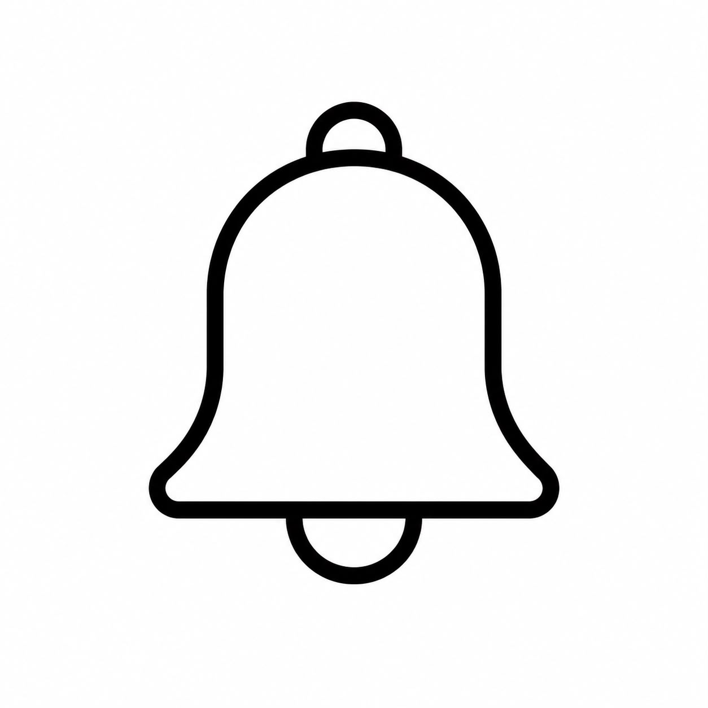

Uso excesivo
Entrás a una red social por unos minutos y terminás pasando más tiempo del que esperabas, sin darte cuenta de cuánto ocupa en tu día.
Las redes sociales están creadas para captar tu atención y mantenerte conectado. Sin darte cuenta, pueden terminar afectando tu tiempo, tu bienestar y tu forma de pensar.
En esta sección vas a reconocer algunas señales comunes del uso excesivo de redes y cómo aparecen en la vida cotidiana.
Entender qué hay detrás
Entrás a una red social por unos minutos y terminás pasando más tiempo del que esperabas, sin darte cuenta de cuánto ocupa en tu día.
Las notificaciones, los videos cortos y el contenido constante pueden hacer que cueste concentrarse en otras actividades.

Revisar el celular muchas veces al día puede volverse un hábito automático, incluso cuando no hay una razón concreta para hacerlo.
Ver constantemente la vida de otras personas puede generar comparación, inseguridad o una sensación de no estar haciendo lo suficiente.
Desbloqueás el celular casi sin darte cuenta, muchas veces buscando nada específico.
El scroll infinito hace que siempre aparezca algo nuevo, y por eso muchas veces cuesta cortar.
La acumulación de estímulos, imágenes, videos y opiniones puede generar saturación, ansiedad o dificultad para relajarte.

Puede ser al despertarte, antes de dormir, mientras estudiás o cuando estás aburrido. Detectar esos momentos ayuda a entender el hábito.
Algunas personas se sienten entretenidas, pero otras terminan cansadas, ansiosas, distraídas o comparándose con los demás.
Un cambio pequeño puede ser silenciar notificaciones, alejar el celular durante una actividad o elegir un horario para desconectarte.
Después de reconocer qué nos pasa, es importante entender por qué sucede. En la próxima sección vas a descubrir cómo las redes están diseñadas para mantener nuestra atención.
Ir a Detrás de su uso